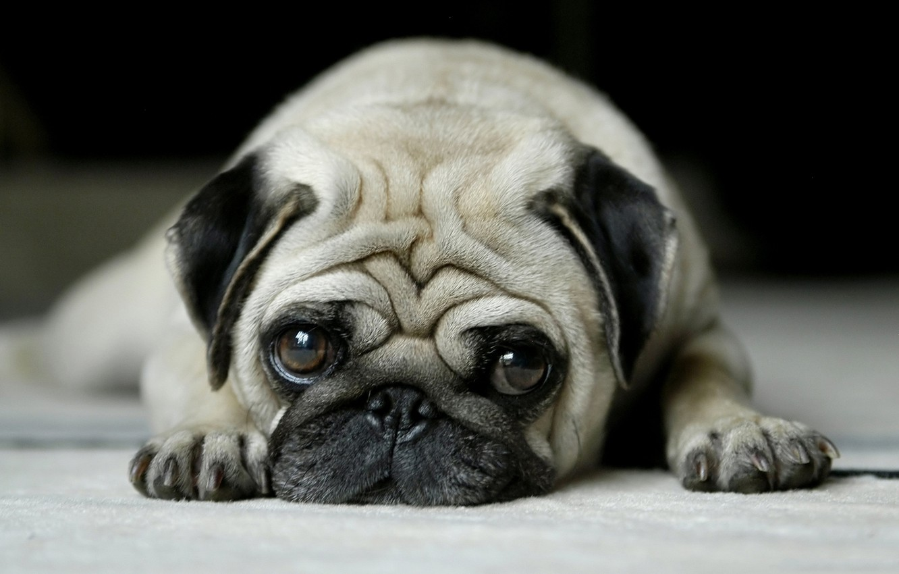
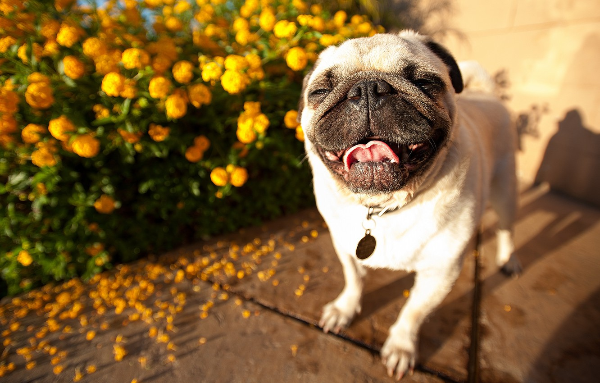

 
Эта очаровательная добрая декоративная собачка — жизнерадостный, общительный компаньон. Мопс — это маленькая собака с большой индивидуальностью. Эту породу любит как старшее поколение, так и молодежь. Он может быть спокойным и тихим, но иногда начинает озорничать и веселить публику. Это великолепный компаньон, если вы сможете уделять ему достаточно времени: он не любит надолго разлучаться со своими близкими.